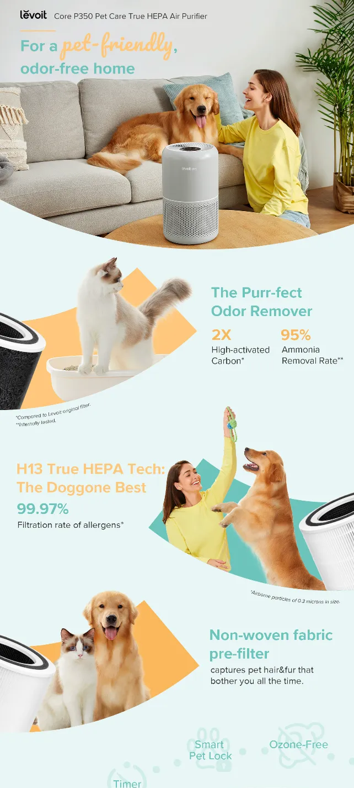
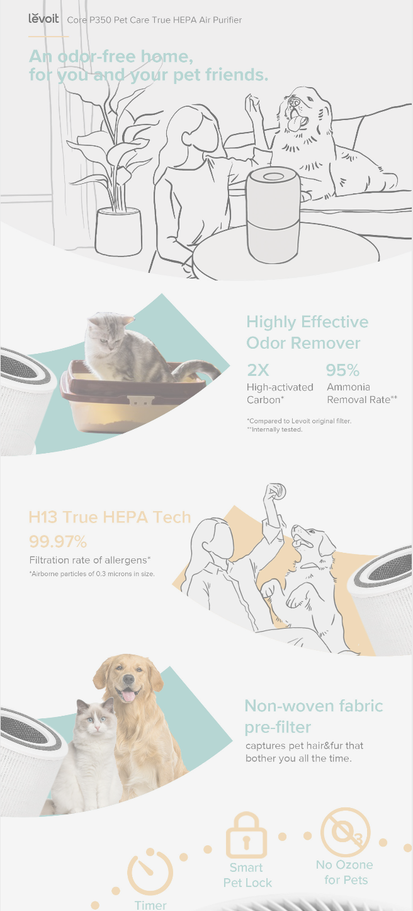
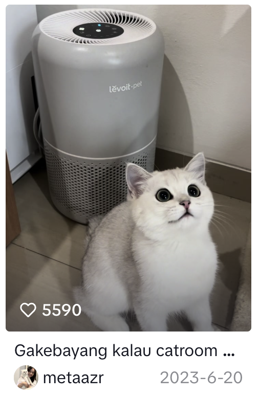
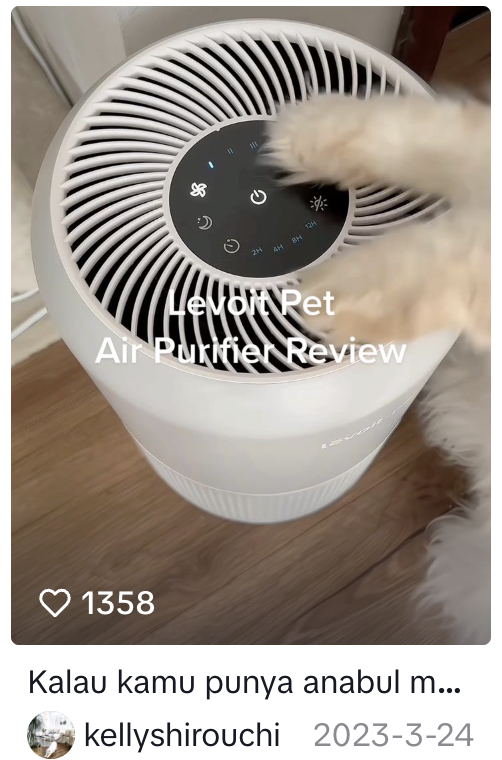
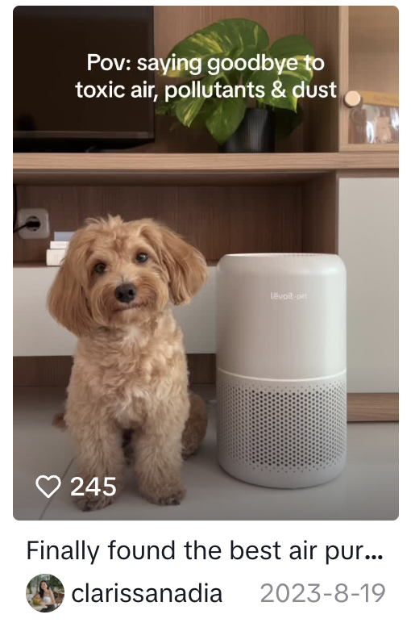
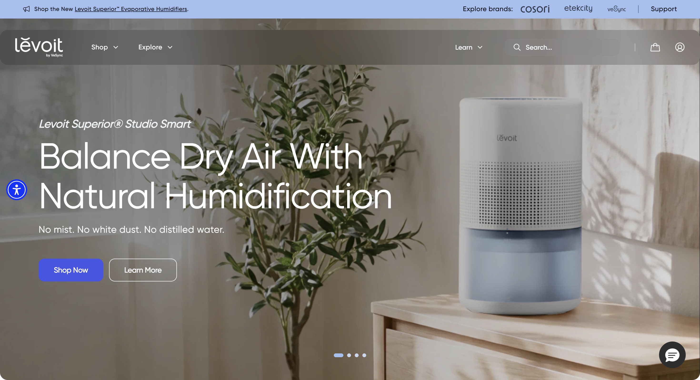
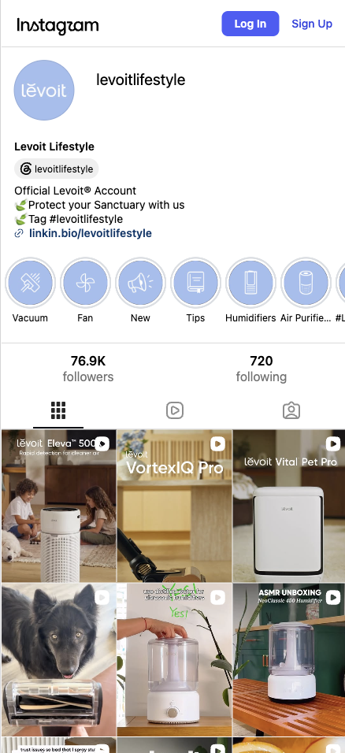

BRANDING
Shaping the Levoit Brand, Channel by Channel
VeSync · Brand & Content Marketer
A familiar product, made new
The Pet Air Purifier was losing sales to dated positioning. As the main marketer, I reshaped who we spoke to, how it looked, and how it sounded.
- Audience research
- Started with the people: young pet owners, how they shop, and the path from first look to purchase.
- Creative direction
- Worked with design on a new palette, packaging, and imagery, so a familiar product looked new. Key stakeholders approved the direction.
- Creator content
- Gave creators a pet-first direction, so the purifier showed up in real life with a pet. TikTok campaigns in North America and Asia sent more traffic to the product’s landing page.
- Copywriting
- Wrote much of the copy, using wordplay to give an air purifier some personality.
From sketch to listing
Drag to see creative ideas come to life.
BeforeAfter


Listen to what pet parents say

“Have pets in the house, without smelling like you have pets in the house.”

“I have spent thousands of dollars each year on vet bills to make sure my bunny is alive and as thriving as he can be because bunnies health can get really bad fast without being able to tell. This has been THE best investment I have ever done for him!”

Results
- Conversion rate improved to 15.9%
- 15.9%
- A/B test probability of successful optimization
- 99%
- Amazon Best Sellers, air purifiersNorth America
- Top 5
Levoit beyond the launch
The work that kept the brand consistent after launch day: what we posted, where people shopped, and how they stayed connected.
- Social calendar
- A full-year plan of sales moments, holiday and education posts, giveaways, and behind-the-scenes, mixed 50% informative, 30% promotional, and 20% entertaining. It helped followers understand the brand, not just the products, and made it feel local in each market.
- European website
- Led the Shopify build with the operations and creative teams and set the product-line hierarchy. Hotjar showed where visitors clicked and dropped off, so the site kept improving, and European shoppers got one clear, on-brand home for the line.
- Planned Levoit product stories and educational content in the social calendar.
- Amazon Brand Store
- Kept the Amazon Brand Store and listings consistent with social and the website, so shoppers met the same brand wherever they found it.
- Subscription and community
- Proposed an air purifier and filter subscription bundle plus a brand community channel, and designed the requirements; the North America team executed. The aim was to turn one-time buyers into repeat customers who stay connected to the brand.

